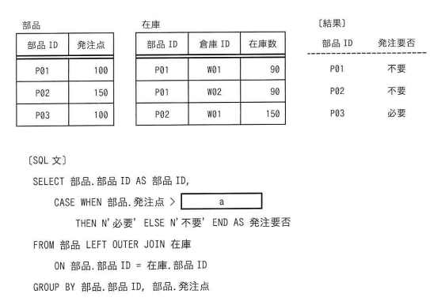

"部品"表及び"在庫"表に対し，SQL文を実行して結果を得た。SQL文のaに入れる字句はどれか。
【部品】
| 部品ID | 発注点 |
|---|---|
| P01 | 100 |
| P02 | 150 |
| P03 | 100 |
【在庫】
| 部品ID | 倉庫ID | 在庫数 |
|---|---|---|
| P01 | W01 | 90 |
| P01 | W02 | 90 |
| P02 | W01 | 150 |
【結果】
| 部品ID | 発注要否 |
|---|---|
| P01 | 不要 |
| P02 | 不要 |
| P03 | 必要 |
〔SQL文〕
SELECT 部品.部品ID AS 部品ID,
CASE WHEN 部品.発注点 > [ a ]
THEN N'必要' ELSE N'不要' END AS 発注要否
FROM 部品 LEFT OUTER JOIN 在庫
ON 部品.部品ID = 在庫.部品ID
GROUP BY 部品.部品ID, 部品.発注点
ア COALESCE(MIN(在庫.在庫数), 0)
イ COALESCE(MIN(在庫.在庫数), NULL)
ウ COALESCE(SUM(在庫.在庫数), 0)
エ COALESCE(SUM(在庫.在庫数), NULL)

ウ：COALESCE(SUM(在庫.在庫数), 0)
| 選択肢 | 内容 | 補足 |
|---|---|---|
| ア | COALESCE(MIN(在庫.在庫数), 0) | MIN関数を使うとP01の在庫数の最小値90に対し発注点100が上回るため「必要」と判定されてしまい、〔結果〕のP01「不要」と矛盾する（bash_toolによるSQLite実行検証でも不一致を確認） |
| イ | COALESCE(MIN(在庫.在庫数), NULL) | アと同様にMIN関数による値の誤りに加え、第2引数がNULLのためP03（在庫データなし）の比較がNULLとの比較となり常にUNKNOWN（不要側）となり、〔結果〕のP03「必要」と矛盾する（実行検証でも不一致を確認） |
| ウ | COALESCE(SUM(在庫.在庫数), 0) | 正解。SUM関数でP01の在庫合計90+90=180を発注点100と比較すると「不要」、P02は150=150で「不要」、P03は在庫データなし（NULL）がCOALESCEにより0に変換され発注点100>0で「必要」となり、〔結果〕と完全に一致する（bash_toolでのSQLite実行検証で確認済み） |
| エ | COALESCE(SUM(在庫.在庫数), NULL) | SUM関数自体はウと同じ値を返すが、第2引数がNULLのためP03の比較がNULLとの比較となり常にUNKNOWN（不要側）となってしまい、〔結果〕のP03「必要」と矛盾する（実行検証でも不一致を確認） |
出典：2024年度 春期 応用情報技術者試験 午前 問26（IPA）